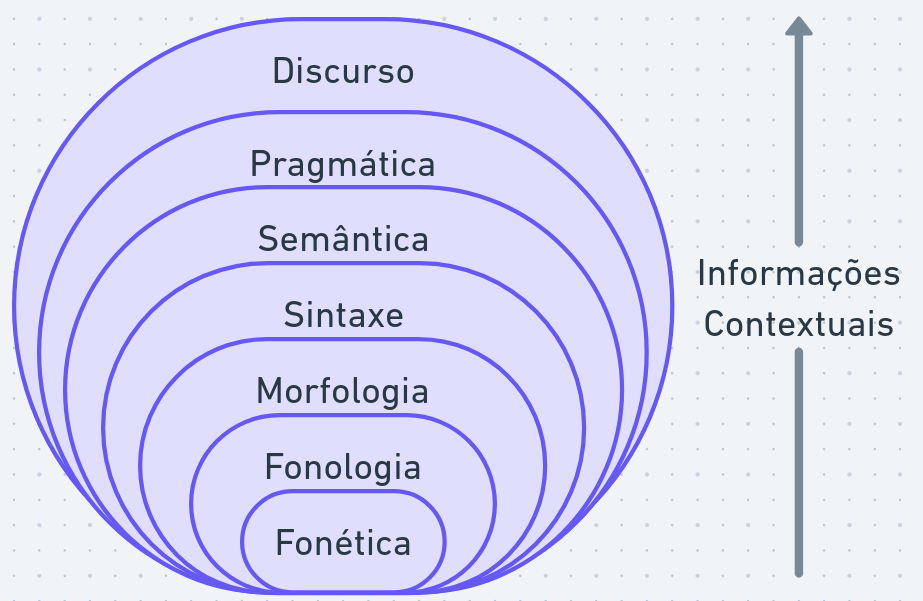
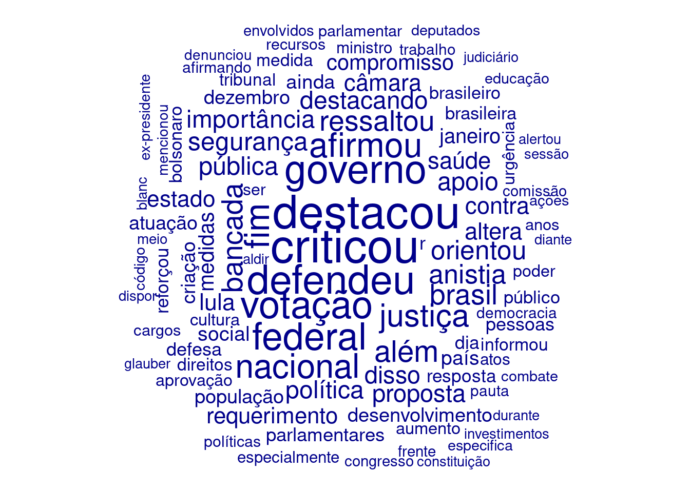

Quais são fontes textuais interessantes para estudos políticos?
Tipos de fontes de dados textuais:
Banco de dados: dados já organizados e estruturados para análise.
Muitas vezes inclúem metadados (informações adicionais sobre os textos, ex: dada, interlocutor, local etc).
Como o custo de manutenção é alto, o acesso geralmente é restrito para a instituição.
APIs: interfaces de programação que permitem acessar dados textuais de forma automatizada, como APIs de redes sociais (Twitter, Facebook) e dados governamentais (dados.gov.br)
O formato dos dados varia para cada fonte (JSON ou XML), mas geralmente inclui metadados e o texto em si.
O acesso pode ser fechado (chave de API) ou limitado (limite de requisições por dia).
Arquivos de texto: dados em formato bruto, como arquivos de texto (TXT, CSV) e texto com formatação (Markdown, HTML, RTF)
A leitura desses arquivos por programas é fácil, mas pode exigir pré-processamento para lidar com formatação e metadados.
Arquivos não estruturados: dados em formatos não estruturados, como PDFs, documentos Word, planilhas, imagens e vídeos.
PDFs e imagens e vídeos podem ser convertidos em texto utilizando técnicas de OCR (Optical Character Recognition) ou transcrição automática.
O processamento pode ser custoso e gerar ruídos.
Web scraping: extração de dados textuais de sites da internet utilizando ferramentas como rvest em R.
O acesso é aberto, mas pode ser limitado por políticas de uso do site ou por medidas de segurança (CAPTCHA, bloqueio de IP).
O formato dos dados varia para cada site e pode exigir pré-processamento para lidar com formatação e metadados. Alterações no site podem quebrar o processo de extração.
2.1.1 Exemplo: Obtendo Discursos da Câmara dos Deputados
A Câmara dos Deputados disponibiliza um banco de dados de discursos em formato XML, que pode ser acessado por meio de uma API.
Como a requisição a ser feita é do tipo GET, os parâmetros são passados na URL. O endereço completo da requisição é construído concatenando a URL base com os parâmetros utilizando a função str_c do pacote stringr.
dados_sessoes <- httr::GET(endereco) |># realizar requisição httr::content(as ="text") |># obter resposta como texto xml2::read_xml() |># ler texto como XML xml2::xml_find_all("//sessoesDiscursos") |># obter todos os elementos dentro de <sessoesDiscursos> xml2::as_list() # converter XML para listaprint(length(dados_sessoes))
[1] 1
Os dados incluem informações sobre as sessões, fases das sessões e discursos, incluindo metadados como nome do orador, partido, estado, hora de início do discurso, sumário do discurso etc.
Vamos inspecionar a lista gerada para entender a estrutura:
$orador
$orador$numero
$orador$numero[[1]]
[1] "1"
$orador$nome
$orador$nome[[1]]
[1] "Benedita da Silva"
$orador$partido
$orador$partido[[1]]
[1] "PT "
$orador$uf
$orador$uf[[1]]
[1] "RJ"
$horaInicioDiscurso
$horaInicioDiscurso[[1]]
[1] "30/04/2025 09:20:00"
$txtIndexacao
$txtIndexacao[[1]]
[1] "Deputada federal,Transgênero,Visto consular,Consulado,Estados Unidos,Sexo masculino,Supremo Tribunal Federal (STF),Ação Direta de Inconstitucionalidade,Direitos humanos,retificação,Nome,Gênero,Princípio da dignidade da pessoa humana,Identidade de gênero,Governo federal,Bancada Feminina"
$numeroQuarto
$numeroQuarto[[1]]
[1] "4327688"
$numeroInsercao
$numeroInsercao[[1]]
[1] "1"
$sumario
$sumario[[1]]
[1] "A Deputada repudiou a emissão de visto com marcação de gênero masculino à Deputada Erika Hilton pelo Consulado dos Estados Unidos, classificando o ato como discriminatório e contrário ao ordenamento jurídico brasileiro. Ressaltou que a decisão do Supremo Tribunal Federal (STF) na Ação Direta de Inconstitucionalidade (ADI) nº 4.275 garante o direito à retificação de nome e gênero com base na dignidade da pessoa humana. Destacou que Brasil e Estados Unidos são signatários de acordos internacionais que asseguram a proteção da identidade de gênero e afirmou que o episódio configura grave violação diplomática. Defendeu o respeito à cidadania das pessoas trans e à diversidade nas instituições, reafirmando o compromisso do Governo com os direitos humanos. Por fim, enfatizou que a bancada feminina é diversa e unida pela garantia da dignidade e da identidade de todas as Parlamentares."
Podemos transformar os dados em data frame (tibble) para facilitar a manipulação:
df_sessoes <- dados_sessoes[[1]] |>map(as_tibble) |># converter cada elemento da lista em tibblebind_rows() # combinar os tibbles em um único tibbleprint(df_sessoes)
# A tibble: 22 × 5
codigo data numero tipo fasesSessao
<list> <list> <list> <list> <named list>
1 <chr [1]> <chr [1]> <chr [1]> <chr [1]> <named list [3]>
2 <chr [1]> <chr [1]> <chr [1]> <chr [1]> <named list [3]>
3 <chr [1]> <chr [1]> <chr [1]> <chr [1]> <named list [3]>
4 <chr [1]> <chr [1]> <chr [1]> <chr [1]> <named list [3]>
5 <chr [1]> <chr [1]> <chr [1]> <chr [1]> <named list [3]>
6 <chr [1]> <chr [1]> <chr [1]> <chr [1]> <named list [3]>
7 <chr [1]> <chr [1]> <chr [1]> <chr [1]> <named list [3]>
8 <chr [1]> <chr [1]> <chr [1]> <chr [1]> <named list [3]>
9 <chr [1]> <chr [1]> <chr [1]> <chr [1]> <named list [3]>
10 <chr [1]> <chr [1]> <chr [1]> <chr [1]> <named list [3]>
# ℹ 12 more rows
Como os dados estão aninhados (sessões > fases > discursos), precisamos expandir os dados em linhas e colunas:
df_sessoes <- df_sessoes |>unnest_wider(fasesSessao, names_sep ='_') |># expandir a dados de fases em colunas unnest(fasesSessao_discursos) |># expandir discursos em linhasunnest_wider(fasesSessao_discursos, names_sep ='_') |># expandir dados de discurso em colunasunnest_wider(fasesSessao_discursos_orador, names_sep ='_') |># expandir dados de orador em colunas separadasmutate_all(compose(str_trim, unlist)) # remover espaços em branco e converter listas em caracteresprint(df_sessoes)
# A tibble: 1,805 × 15
codigo data numero tipo fasesSessao_codigo fasesSessao_descricao
<chr> <chr> <chr> <chr> <chr> <chr>
1 64.2025 30/04/2025 2 Ordinária… BC Breves Comunicações
2 64.2025 30/04/2025 2 Ordinária… BC Breves Comunicações
3 64.2025 30/04/2025 2 Ordinária… BC Breves Comunicações
4 64.2025 30/04/2025 2 Ordinária… BC Breves Comunicações
5 64.2025 30/04/2025 2 Ordinária… BC Breves Comunicações
6 64.2025 30/04/2025 2 Ordinária… BC Breves Comunicações
7 64.2025 30/04/2025 2 Ordinária… BC Breves Comunicações
8 64.2025 30/04/2025 2 Ordinária… BC Breves Comunicações
9 64.2025 30/04/2025 2 Ordinária… BC Breves Comunicações
10 64.2025 30/04/2025 2 Ordinária… BC Breves Comunicações
# ℹ 1,795 more rows
# ℹ 9 more variables: fasesSessao_discursos_orador_numero <chr>,
# fasesSessao_discursos_orador_nome <chr>,
# fasesSessao_discursos_orador_partido <chr>,
# fasesSessao_discursos_orador_uf <chr>,
# fasesSessao_discursos_horaInicioDiscurso <chr>,
# fasesSessao_discursos_txtIndexacao <chr>, …
# A tibble: 1,805 × 16
codigo data numero tipo cod_sessao fase_sessao num_orador nome_orador
<chr> <chr> <chr> <chr> <chr> <chr> <chr> <chr>
1 64.2025 30/04/2025 2 Ordi… BC Breves Com… 1 Benedita d…
2 64.2025 30/04/2025 2 Ordi… BC Breves Com… 1 Luiz Lima
3 64.2025 30/04/2025 2 Ordi… BC Breves Com… 1 Otoni de P…
4 64.2025 30/04/2025 2 Ordi… BC Breves Com… 1 Sargento F…
5 64.2025 30/04/2025 2 Ordi… BC Breves Com… 1 Cabo Gilbe…
6 64.2025 30/04/2025 2 Ordi… BC Breves Com… 1 Helder Sal…
7 64.2025 30/04/2025 2 Ordi… BC Breves Com… 1 Ricardo Ma…
8 64.2025 30/04/2025 2 Ordi… BC Breves Com… 1 Rogério Co…
9 64.2025 30/04/2025 2 Ordi… BC Breves Com… 1 Helder Sal…
10 64.2025 30/04/2025 2 Ordi… BC Breves Com… 1 Coronel As…
# ℹ 1,795 more rows
# ℹ 8 more variables: partido_orador <chr>, uf_orador <chr>,
# hora_inicio_discurso <chr>, indexacao <chr>, num_quarto <chr>,
# num_insercao <chr>, text <chr>, doc_id <chr>
o padrão Text Interchange Formats (TIF) foi criado para padronizar objetos de análise textual (https://github.com/ropenscilabs/tif). Para seguir o padrão, armazenamos o texto principal (sumário do discurso) na coluna text e um identificador único de cada texto (combinação de sessao, quarto, orador e num_insercao) na coluna doc_id.
Algumas estatísticas básicas sobre os discursos:
print(str_c("Número total de discursos: ", nrow(df_sessoes)))
[1] "Número total de discursos: 1805"
print(str_c("Número total de oradores: ", n_distinct(df_sessoes$nome_orador)))
[1] "Número total de oradores: 346"
print(str_c("Número total de partidos: ", n_distinct(df_sessoes$partido_orador)))
[1] "Número total de partidos: 22"
print(str_c("Número total de estados: ", n_distinct(df_sessoes$uf_orador)))
[1] "Número total de estados: 28"
Principais oradores:
df_sessoes |>group_by(nome_orador) |># agrupar por nome do oradorsummarise(num_discursos =n()) |># contar número de discursos por oradorarrange(desc(num_discursos)) |># ordenar por número de discursos em ordem decrescentehead(5) # mostrar os 5 oradores com mais discursos
df_sessoes |>group_by(partido_orador) |># agrupar por nome do partidosummarise(num_discursos =n()) |># contar número de discursos por oradorarrange(desc(num_discursos)) |># ordenar por número de discursos em ordem decrescentehead(5) # mostrar os 5 oradores com mais discursos
Para facilitar novos processamentos, podemos salvar os dados em formato CSV:
write_csv(df_sessoes, "data/dados_sessoes.csv")
Da mesma forma, podemos ler arquivos CSV utilizando a função read_csv do pacote readr, incluído na coleção tidyverse:
df_sessoes <-read_csv("data/dados_sessoes.csv")
Rows: 1805 Columns: 16
── Column specification ────────────────────────────────────────────────────────
Delimiter: ","
chr (12): codigo, data, tipo, cod_sessao, fase_sessao, nome_orador, partido_...
dbl (4): numero, num_orador, num_quarto, num_insercao
ℹ Use `spec()` to retrieve the full column specification for this data.
ℹ Specify the column types or set `show_col_types = FALSE` to quiet this message.
2.1.2 Criando objeto corpus
Corpus é um termo utilizado para se referir a um conjunto de textos que serão analisados.
O corpus é a base para muitas análises de PLN, pois é a partir dele que os modelos aprendem padrões e estruturas da linguagem.
O termo corpora se refere à uma coleção de corpus.
A biblioteca quanteda possui diversas funções para criar e manipular corpora, como corpus():
if (!"quanteda"%in%installed.packages()) {install.packages("quanteda")}library(quanteda)
Corpus consisting of 1,805 documents and 14 docvars.
BC_4327688_1_1 :
"A Deputada repudiou a emissão de visto com marcação de gêner..."
BC_4327698_1_1 :
"O Deputado criticou o Governo Lula por abandonar os mais pob..."
BC_4327701_1_1 :
"O Deputado acusou a família do Presidente Lula de se benefic..."
BC_4327704_1_1 :
"O Deputado alertou para a tentativa de um líder da organizaç..."
BC_4327707_1_1 :
"O Deputado criticou o Ministro da Previdência Social, Carlos..."
BC_4327710_1_1 :
"O Deputado defendeu o papel do Governo Lula na investigação ..."
[ reached max_ndoc ... 1,799 more documents ]
Os metadados (informações adicionais sobre os textos) são armazenados como atributos do corpus e podem ser acessados utilizando a função docvars():
metadados <- corpus_sessoes |>docvars() |># obter metadados do corpusselect(nome_orador, partido_orador, uf_orador) # selecionar colunas de interesseprint(head(metadados)) # head mostra as primeiras linhas do data frame
nome_orador partido_orador uf_orador
1 Benedita da Silva PT RJ
2 Luiz Lima NOVO RJ
3 Otoni de Paula MDB RJ
4 Sargento Fahur PSD PR
5 Cabo Gilberto Silva PL PB
6 Helder Salomão PT ES
Assim como filter, podemos obter subconjuntos de corpus_sessoes com a função corpus_subset():
Corpus consisting of 362 documents and 14 docvars.
BC_4327688_1_1 :
"A Deputada repudiou a emissão de visto com marcação de gêner..."
BC_4327710_1_1 :
"O Deputado defendeu o papel do Governo Lula na investigação ..."
BC_4327717_1_1 :
"O Deputado condenou o uso da imunidade parlamentar como escu..."
BC_4327721_1_1 :
"O Deputado anunciou a realização da 26ª Marcha pela Vida e C..."
BC_4327728_1_1 :
"O Deputado criticou a desonestidade intelectual de Parlament..."
BC_4327734_1_1 :
"O Deputado saudou a presença na Câmara dos Deputados de Marc..."
[ reached max_ndoc ... 356 more documents ]
A biblioteca quanteda.textstats possui diversas funções para calcular estatísticas de texto, como frequência de palavras, diversidade lexical, legibilidade etc.
if (!"quanteda.textstats"%in%installed.packages()) {install.packages("quanteda.textstats")}library(quanteda.textstats)
Da mesma forma, quatenda.textplots possui diversas funções para visualização de texto, como nuvens de palavras, gráficos de frequência, gráficos de coocorrência etc.
if (!"quanteda.textplots"%in%installed.packages()) {install.packages("quanteda.textplots")}library(quanteda.textplots)
A seguir, vamos utilizar corpus_sessoes, as bibliotecas quanteda e relacionadas para realizar as análises de palavras.
2.2 Palavras, morfemas, lemas e stems
O estudo da língua é dividido em diversas subáreas:

fonética e fonologia: sons e sua organização
morfologia: como mofemas se organizam para formar palavras
sintaxe: como palavras se organizam para formar sintagmas e orações
semântica: significado de palavras e frases
pragmática: organização de orações para fins comunicativos
discurso: estruturas do texto como todo
O estudo de PLN geralmente tem foco no texto escrito (e.g morfologia, sintaxe, semântica, discurso).
Porém, fonética e fonologia também são importantes para PLN, especialmente em tarefas que envolvem fala (e.g. reconhecimento de fala, síntese de fala).
Além disso, dada a natureza multimodal da análise de discurso a fala também é relevante. Por exemplo:
Que tipo de informação é transmitida por meio da fala, além do conteúdo semântico? Quais estão destacadas no texto taquigrafado?
A unidade mínima de informação para PLN depende do nível de análise:
partes de palavras (como morfemas, lemas ou stems) são uteis para “unir” signicados entre palavras relacionadas
palavras são uteis para análise sintática e semântica
frases e parágrafos são uteis para análise de modelos de discurso
Por exemplo “beija-flor” e “escova de dente” podem ser consideradas palavras compostas ou não.
Na morfologia, a unidade mínima de significado é o morfema:
“casa” tem um morfema (casa)
“casas” tem dois morfemas (casa + s)
“casinha” tem dois morfemas (casa + inha)
“casinhas” tem três morfemas (casa + inha + s)
A lematização é o processo de reduzir uma palavra ao seu lema (ou forma canônica). Ex.:
“gatos” -> “gato”
“gata” -> “gato”
“gatinhas” -> “gato”
A stemização é o processo (menos preciso) de reduzir uma palavra ao seu radical (ou raiz). Ex.:
“gatos” -> “gat”
“gata” -> “gat”
“gatinhas” -> “gat”
2.2.1 Obtendo informações morfológicas de palavras
Separar palavras em subunidades pode ser útil em análises:
dividir palavras compostas
tratar palavras novas ou desconhecidas
analisar palavras incorretas
avaliar complexidade do texto
Por exemplo, Moffitt (2016) destaca o uso de neologismos em performances populistas (refudiate por Sarah Palin). Outros estudos comparam morfemas em diferentes estilos de texto, como jornalístico e literário.
A biblioteca morphemepiece é uma ferramenta para segmentação de palavras em morfemas da língua inglesa.
if (!"morphemepiece"%in%installed.packages()) {install.packages("morphemepiece")}library(morphemepiece)print(morphemepiece_tokenize("houses"))
[[1]]
house ##s
5617 4034
print(morphemepiece_tokenize("orderly"))
[[1]]
order ##ly
6478 4057
print(morphemepiece_tokenize("paradoxical"))
[[1]]
paradox ##ical
9590 4361
print(morphemepiece_tokenize("discoursal"))
[[1]]
discourse ##al
6456 4041
Existem ferramentas baseadas em dicionários e língua portuguesa do Brasil, por exemplo o projeto MorphoBR https://github.com/LR-POR/MorphoBr
Stemming é um processo mais simples e menos preciso do que lematização, mas pode ser útil para algumas tarefas de PLN, como análise de sentimentos ou classificação de texto.
Exemplos utilizando a biblioteca quanteda:
stems_testar <-char_wordstem(c("testar", "testando", "testarei"), language ="pt")print(stems_testar)
[1] "test" "test" "test"
stems_love <-char_wordstem(c("love", "loving", "loved"), language ="en")print(stems_love)
[1] "love" "love" "love"
Stemming vai reduzir o vocabulário do texto, facilitando algumas análises de frequência, mas pode gerar ambiguidades e perder informações importantes sobre o significado das palavras.
2.2.3 Caracteres
A menor unidade de informação em um texto computacional (ou string) é o caractere (ou símbolo).
O padrão Unicode cataloga e codifica caracteres de diferentes linguagens, incluindo linguagens extintas como sumério e cuneiforme:
Ver: <https://www.unicode.org/charts/>
A codificação (encoding) de textos se refere a como os caracteres são representados em números binários no computador (bytes).
O padrão mais comum é o UTF-8 que utiliza tamanho variável de caracteres.
A biblioteca quanteda possui funções para separação de caracteres, como tokenize_character:
print(tokenize_character("avião = 飞机"))
[[1]]
[1] "a" "v" "i" "ã" "o" " " "=" " " "飞" "机"
print(tokenize_character("#feliz! \U0001f600"))
[[1]]
[1] "#" "f" "e" "l" "i" "z" "!" " " "😀"
2.2.4 Tokenização
Não há consenso sobre a definição de palavra na linguística. Em PLN, a separação do texto em palavras depende do contexto da aplicação.
O problema de separar palavras (ou unidades mínimas de significado) em um texto é conhecido como tokenização e é uma etapa fundamental para muitas tarefas de PLN.
Note que o problema não é muito simples. O chinês, por exemplo, não utiliza espaço para separar palavras e cada caractere representa um morfema.
A biblioteca quanteda possui a função tokens() para realizar a tokenização de um texto, com diversas opções para personalizar o processo:
texto <-'Ele disse: "Uh, são 13 horas. Não está na hora de almoçar?"'tokens_padrao <-tokens(texto)print(tokens_padrao)
Tokens consisting of 1 document.
text1 :
[1] "Ele" "disse" ":" "\"" "Uh" "," "são" "13" "horas"
[10] "." "Não" "está"
[ ... and 6 more ]
texto <-'Ele disse: "Uh, são 13 horas. Não está na hora de almoçar?"'tokens <-tokens(texto, remove_punct =TRUE, remove_numbers =TRUE)print(tokens)
texto <-'Ele disse: "Uh, são 13 horas. Não está na hora de almoçar?". Não, ela disse.'tokens <-tokens(texto, what ="sentence")print(tokens)
Tokens consisting of 1 document.
text1 :
[1] "Ele disse: \"Uh, são 13 horas." "Não está na hora de almoçar?\"."
[3] "Não, ela disse."
A tokenização em palavras é útil para análise sintática e semântica, enquanto a tokenização em sentenças é útil para análise de modelos de discurso.
Em algumas aplicações, como modelos de linguagem, a tokenização é um processo essencial na contrução do vocabulário. O vocabulário é a coleção de todas as palavras conhecidas do modelo.
Uma estrutura útil npara análise de texto é a matriz de documentos e termos (Document-Feature Matrix, DFM), que representa a frequência de cada palavra em cada documento:
dfm_sessoes <- corpus_sessoes |>tokens(remove_punct =TRUE, remove_numbers =TRUE) |># tokenizar textotokens_tolower() |># converter palavras para minúsculodfm() # criar matriz de documentos e termosprint(dfm_sessoes)
Cada linha é um documento e cada coluna é uma palavra. O valor em cada célula representa a frequência da palavra no documento.
print(dfm_sessoes[3, "presidente"])
Document-feature matrix of: 1 document, 1 feature (0.00% sparse) and 14 docvars.
features
docs presidente
BC_4327701_1_1 1
Por exemplo, para contar quantas vezes a palavra “presidente” é mencionada em todos os discursos, podemos somar os valores da coluna correspondente:
sum(dfm_sessoes[, "presidente"])
[1] 341
2.2.5 Byte Pair Encoding (BPE)
A divisão em simples palavras tem um problema com palavras desconhecidas (out-of-vocabulary).
Uma solução que busca o “meio-termo” entre a separação entre palavras e a separação entre caracteres é o Byte Pair Encoding (BPE).
O BPE é um algoritmo de compressão de dados que pode ser adaptado para tokenização. Ele funciona substituindo pares caracteres mais frequentes por um token único, recursivamente, criando assim um vocabulário de subpalavras.
if (!"tokenizers.bpe"%in%installed.packages()) {install.packages("tokenizers.bpe")}library(tokenizers.bpe)
model <-bpe( df_sessoes$text,vocab_size =200000,threads =1,model_path ="data/bpe_tokenizer")
Note que os tokens gerados pelo BPE não necessáriamente correspontem “significados”.
Porém, são muito útens em modelos que consideram sequências como entrada e modelos multi-línguas.
2.2.6 Stopwords
Stopwords são palavras comuns que geralmente não carregam muito significado semântico, como “o”, “a”, “de”, “e” em português. Elas são frequentemente removidas em tarefas de PLN para reduzir o ruído e melhorar a eficiência do modelo.
Uma prática comum no processamento de textos é remover as stopwords antes de realizar análises, como contagem de palavras ou análise de sentimentos.
Podemos encontrar listas de stopwords em português e outras línguas na Internet, por exemplo, utilizando o pacote stopwords.
if (!"stopwords"%in%installed.packages()) {install.packages("stopwords")}library(stopwords)
A remoção de stopwords pode não ser adequada para todas as tarefas, especialmente aquelas que dependem do contexto ou da estrutura do texto (análise sintática, partes de discurso, etc).
2.3 Exemplo: Palavras mais Utilizadas em Discursos
Primeiro, vamos tokenizar os discursos utilizando a função spacy_tokenize e expandir os tokens em linhas utilizando a função unnest do pacote tidyverse:
Para extrair algumas estatísticas básicas, como as palavras mais comuns, podemos utilizar a função topfeatures:
palavras_mais_comuns <-textstat_frequency(dfm_sessoes, n =10)print(palavras_mais_comuns)
feature frequency rank docfreq group
1 deputado 1682 1 1487 all
2 lei 1127 2 677 all
3 nº 1113 3 695 all
4 projeto 830 4 740 all
5 sobre 664 5 541 all
6 criticou 644 6 603 all
7 destacou 630 7 617 all
8 defendeu 542 8 516 all
9 governo 532 9 388 all
10 votação 508 10 459 all
Podemos remover mais palavras que não colaboram para a interpretação dos dados, da mesma forma que removemos stopwords:
feature frequency rank docfreq group
1 criticou 644 1 603 all
2 destacou 630 2 617 all
3 defendeu 542 3 516 all
4 governo 532 4 388 all
5 votação 508 5 459 all
6 federal 498 6 409 all
7 fim 445 7 435 all
8 afirmou 438 8 408 all
9 nacional 435 9 390 all
10 justiça 403 10 337 all
textplot_wordcloud(dfm_sessoes, max_words =100)

Agrupando por partido:
palavras_por_partido <-textstat_frequency(dfm_sessoes, n =5, groups = partido_orador)print(palavras_por_partido)
Leia mais sobre morfemas, tokenização no Capítulo 2 do livro “Speech and Language Processing” (Jurafsky and Martin 2026) e os Capítulos 4 e 5 do livro “Processamento de Linguagem Natural” (Caseli and Nunes 2024).
Estude os tutoriais da biblioteca quanteda em https://tutorials.quanteda.io/. Saiba mais sobre a biblioteca lendo o artigo de Benoit et al. (2018).
2.5 Atividade prática
Obtenha os discursos do plenário da Câmara dos Deputados utilizando a API para um período de sua escolha.
Realize a tokenização e remova stopwords dos discursos.
Conte as palavras mais comuns e visualize os resultados utilizando uma nuvem de palavras (word cloud).
Compare as palavras mais comuns entre diferentes partidos ou oradores.
Utilize o argumento groups para construir o dfm(..., groups = "partido_orador") e textplot_wordcloud(..., comparison = TRUE) para gerar wordclouds comparativos.
Benoit, Kenneth, Kohei Watanabe, Haiyan Wang, Paul Nulty, Adam Obeng, Stefan Müller, and Akitaka Matsuo. 2018. “Quanteda: An r Package for the Quantitative Analysis of Textual Data.”Journal of Open Source Software 3 (30): 774. https://doi.org/10.21105/joss.00774.
Caseli, H. M., and M. G. V. Nunes, eds. 2024. Processamento de Linguagem Natural: Conceitos, Técnicas e Aplicações Em Português. 2nd ed. BPLN. https://brasileiraspln.com/livro-pln/2a-edicao/.
Jurafsky, Daniel, and James H. Martin. 2026. Speech and LanguageProcessing: AnIntroduction to NaturalLanguageProcessing, ComputationalLinguistics, and SpeechRecognition, with LanguageModels. 3rd ed. https://web.stanford.edu/~jurafsky/slp3/.
Moffitt, Benjamin. 2016. The Global Rise of Populism: Performance, Political Style, and Representation. 1st ed. Stanford University Press. https://doi.org/10.2307/j.ctvqsdsd8.